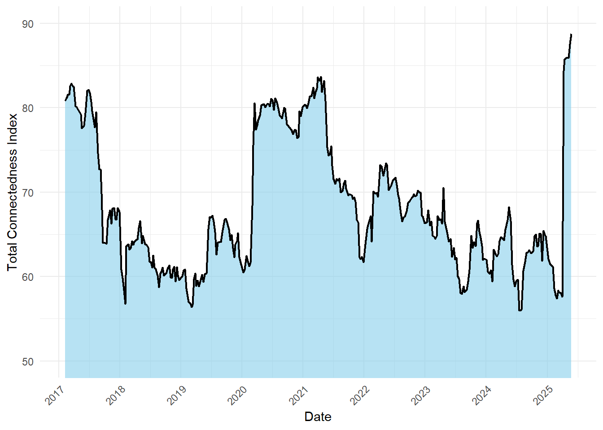
4 Dynamic Network Analysis
4.1 Introduction
In Chapter 3 we provided a static analysis of the network obtained applying a BVAR model over the entire dataset of the log-volatility of reinsurance companies. Although these data produce a solid and satisfying base for statistical validity, static network analysis have limitations with regard to the dynamics developments of the relations and components of the network. To better assess such elements, we performed a dynamic network analysis (DNA), that allows us to observe changes over the entire time period, making the identification of systemically important reinsurers and the dynamics of the whole system more insightful and robust. This chapter displays the methodology used to perform the DNA, the evolution of the network topology and the firm level dynamics over the 10 year period, with a later focus on the effect of significant various events over the system’s tendencies.
4.2 Methodology
The data used to perform the subsequent analysis is the same as presented in Chapter 2, consisting of 27 reinsurance companies with log volatility data for the period starting at 2015-11-27 and ending at 2025-05-30, for a total of 1993 observations per company. This data set was divided into 349 windows, each containing 250 observations. Each window took a 5 step size between the previous one. The window size corresponds roughly to a full trading year (in our case, it amounts to more than one year, due to the constraint of gathering companies’ prices from different markets), while the step size corresponds to a weekly delay. The choice of this window length fixes the economic memory of each estimate. The network at any date reflects approximately the last twelve months of co-movement, long enough to yield a stable estimate yet short enough to register a regime change within a smaller period. This design captures sustained shifts in interdependence rather than transient single-week contagion. The fragmented data set was subjected to the same BVAR model shown in Chapter 2 to obtain the GFEVD matrix to estimate the network. However, due to technical limitations and computational requirements, the burn-in phase and the total draws used to estimate the BVAR model for each window have been reduced, respectively, to \(9,000\) and \(3,000\) draws, compared to the \(15,000\) and \(5,000\) original draws used to estimate the static network. The reduced number of draws shorten the estimation time for the whole process, but remain sufficient to ensure reliable point estimates. In order to ensure the stability of the model, the convergence of the MCMC chains has been tested every 20 windows using the Gelman-Rubin diagnostic. Across the 349 windows, the Potential Scale Reduction Factor (PSRF) for both hyperparameters and the marginal likelihood remained below \(1.02\), significantly better than the standard \(1.10\) threshold, indicating robust convergence of the MCMC chains, letting the regime switching dynamics documented below to be attributed to genuine features of the market, rather than to instability of the sampler.
The parameters and priors used for the BVAR model estimation remain unchanged, as well as the forecast horizon of 10 days used to estimate the GFEVD matrix.
As a result, each matrix represents the edges between reinsurers and the fully weighted connected graph for each window. The total connectedness value \(C^H\) was computed along with the “From” and “To” values (corresponding to the row sums and column sums of the matrix). After analyzing the distribution of the fully connected graphs created using the connectedness matrix \(C\), the \(50^{th}\) percentile threshold was applied to allow comparison with the analysis presented in Chapter 3.
In the next section, we present the analysis of the topology evolution and the firm level dynamics during the period analyzed.
4.3 Network Evolution
4.3.1 Total Connectedness Evolution
Figure 4.1 shows the evolution of Total Connectedness Index (TCI) over time. We use this metric as a primary identifier for significant changes and to assess the overall connectedness of the system. Compared to the static value obtained in the previous chapter (\(74.28\)), the average value over the whole 349 windows analyzed is \(68.2\), with a maximum value of \(88.75\) and a minimum of \(56\). To better assess the distribution of the connectedness values obtained, the distribution was divided into three regimes: - Low regime for values below the \(25^{th}\) percentile of the distribution - Normal regime, for values between the \(25^{th}\) and \(75^{th}\) percentiles - High regime, for values greater than the \(75^{th}\) percentile
The higher standard deviation of the high regime values, as reported in Table 4.1, compared to the normal and low regimes, suggests that the presence of outliers typically originates for values higher than the normal mean. The TCI distribution is shown in Figure 4.2. Clearly, the distribution is bimodal, showing a marked regime change and two peak values in the normal and high regimes. The reinsurance market does not revert towards its mean value, but bimodality suggests that the system alternates between two distinct regimes: one standard equilibrium and one with higher connectivity. Following this classification, the result of the static analysis would be categorized as a high connected network, as its TC value is above the threshold quantile. This indicates that the static analysis might have been inflated by periods with higher connectivity, and that the reinsurance market might not possess a single equilibrium level of integration, but rather two states between which it switches. This is interesting for a supervisor standpoint of view, re framing the question from how connected the system is at a given moment to which regime the system currently is and if it is transitioning from one state to another.
| Regime | Windows | Mean TCI | SD TCI | Pct |
|---|---|---|---|---|
| Normal | 175 | 66.50 | 2.91 | 50.14 |
| High | 87 | 80.04 | 2.91 | 24.93 |
| Low | 87 | 59.81 | 1.59 | 24.93 |
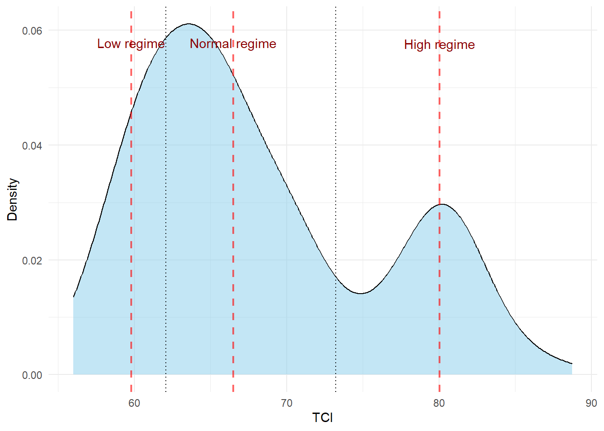
The pairwise edge distribution of the static network has been compared with the distributions obtained from each computed network. The results showed similar values for the mean of the distributions, while the standard deviation of the dynamically computed networks appeared to be slightly higher, with a value of 2.62 compared to the 2.6 of the static network. The evolution of the mean and the standard deviation for the networks are shown in Figure 4.3. The highest standard deviation are in conjunction with lower TCI values, indicating that a less connected network results in a wider range of pairwise connection, as shown by the negative Pearson’s correlation (\(\rho=-0.41\)) between the two metrics.
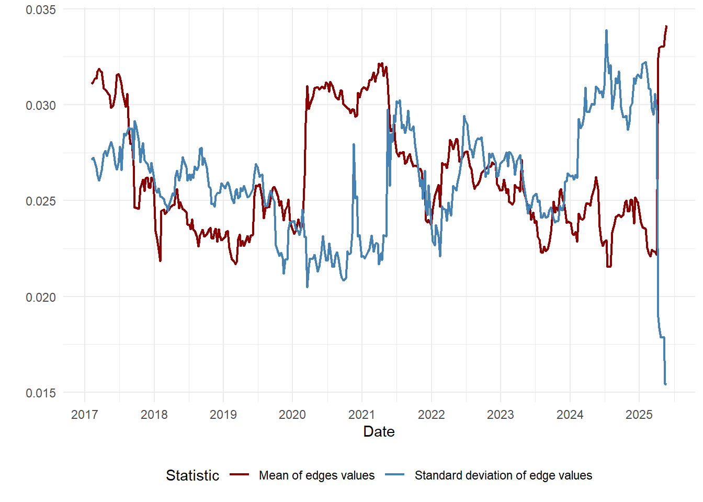
Regarding the strongest pairwise connections between reinsurers, a similar pattern between static and dynamic analysis was found. The Japanese reinsurers tend to maintain stronger effects and influence within their domestic market, and above the average value of the system. The persistence of this block in more than half of the windows identifies it as a structural rather than episodic feature, showing a tightly interconnected cluster that co-moves internally without exporting substantial variance to the global system. Table 4.2 reports the pairwise connections that appeared more frequently in the top 15 connections of the system. Similarly to the stationary analysis, the strongest pairwise edges are between Japanese companies, with this behavior appearing for more than half of the windows analyzed. This finding extends the assumption that the Japanese market has stronger bounds and has major variance contribution within its market rather than on the whole global market.
| From | To | Frequency | Freq. pct | Avg. Sterngth | Max Strength |
|---|---|---|---|---|---|
| 8725.T | 8766.T | 264 | 75.64 | 16.09 | 25.51 |
| 8766.T | 8630.T | 262 | 75.07 | 12.91 | 20.98 |
| 8725.T | 8630.T | 235 | 67.34 | 15.67 | 21.79 |
| 8766.T | 8725.T | 199 | 57.02 | 15.20 | 22.00 |
| 8630.T | 8725.T | 179 | 51.29 | 13.03 | 19.11 |
| 8630.T | 8766.T | 173 | 49.57 | 15.58 | 25.52 |
| MUV2.DE | HNR1.DE | 140 | 40.11 | 10.72 | 15.98 |
| WRB | RNR | 114 | 32.66 | 12.38 | 18.84 |
| WRB | CB | 86 | 24.64 | 10.23 | 14.52 |
| MUV2.DE | SREN.SW | 85 | 24.36 | 9.38 | 11.66 |
| SREN.SW | CS.PA | 85 | 24.36 | 9.67 | 11.62 |
| RNR | WRB | 81 | 23.21 | 17.32 | 26.58 |
| EG | RNR | 73 | 20.92 | 12.13 | 14.68 |
| HNR1.DE | G.MI | 73 | 20.92 | 10.55 | 13.40 |
| SREN.SW | MUV2.DE | 71 | 20.34 | 9.96 | 12.61 |
4.3.2 Network Topology Evolution
The static analysis in Chapter 3 revealed a disassortative, globally integrated network. However, one might ask whether this behavior is maintained throughout stable and crisis periods, or if different scenarios reshape the network’s architecture.
The \(50^{th}\) percentile threshold is applied independently within each rolling window, producing a constant network density of \(0.50\) by construction. Changes in topology metrics thus do not reflect network densification, bur rather the redistribution of edge weights among the retained connections, and the changes in which specific edges exceed the threshold between windows.
The results of our analysis show that during periods of elevated volatility and high connectedness regime, the reinsurance network contracts significantly. The average path length drops from its time series average of \(0.39\) to a minimum of \(0.29\) during mid 2021 high TCI period, meaning that variance explanation propagates through fewer nodes and shorter paths, with a strong negative correlation with the TCI (\(\rho = -0.723\), \(p < 0.001\)). This means that during a crisis variance reaches the whole system through fewer intermediaries and shorter routes, so that contagion accelerates when its speed is most dangerous.
The diameter instead shows weaker correlation with the TCI (\(\rho = -0.368\)), meaning that TCI changes primarily affect the average network distance, without proportionally shrinking the longest path. During high regime periods, firms get closer, while the most peripheral ones remain relatively distant, being less affected by the higher variance explanation of core firms. As Figure 4.4 shows, the diameter also exhibits higher volatility compared to the APL, reflecting less independence from the TCI regime status.
Notably, the topology response to TCI changes are not exactly symmetrical. An asymmetric regression of APL changes on positive and negative TCI increments yields coefficients of \(-0.003\) (\(p<0.001\)) for TCI increases and \(-0.007\) (\(p<0.001\)) for TCI decreases. The ratio of \(2.33\) between the two coefficients shows that the average path length reacts roughly 2.2\(\times\) more strongly to declines in connectedness that to increases, meaning that the network dissolute more rapidly when stress decrease than it compacts when stress increase The relationship between connectedness and topological compactness is therefore nonlinear and asymmetric, with the network loosening abruptly once a stress episodes passes.
The rolling assortativity provides further insights. While the static analysis yielded a disassortative coefficient (\(r= -0.116\)), the rolling window average is slightly positive (\(\hat{r}=0.078\)). The positive correlation with the TCI (\(\rho = 0.326\)) suggests that during high connectedness periods, the network shifts toward assortativity, with hub firms being more connected to other hubs rather than to peripheral nodes. This structural shift means that the hub-spoke topology is not permanent but tends to emerge during lower connectedness regimes. As connectedness rises, the large hubs couple directly to one another rather than feeding peripheral recipients,, so the systemically important firms cease to diversify against each other and begin to move as a single block, The hub-and-spoke resilience documented in Chapter 3 is this a normal times property that dissolves under stress, when the network adopts its most dangerous systemic configuration.
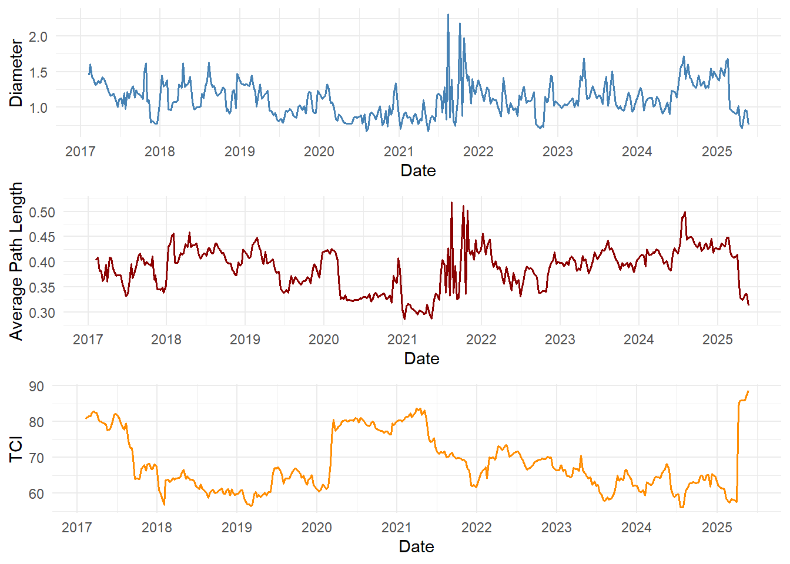
4.3.3 Network Stability and Community Evolution
We tested network stability and community evolution performing the Jaccard stability analysis for consecutive TC values, and community evolution analyzing the modularity measure for the various rolling windows.
4.3.3.1 Jaccard Stability
To quantify the similarity of the connections between consecutive networks we used the Jaccard similarity measure. Mathematically, the index is defined as the ratio between the intersection size and the union size, with values ranging from 0 for sets with no elements in common, and 1 for identical sets. \[ \text{Jaccard} = \frac{A \cap B}{A \cup B} \] The observed mean Jaccard similarity score is \(0.88\) (\(\sigma = 0.06\)), with a right skewed distribution. While this high baseline suggests strong continuity, it must be interpreted in the context of the rolling window methodology applied: with a step size of 5 and a window of 250 observations, consecutive windows share \(98\%\) of the underlying data.
Consequently, the various “dips” in the Jaccard similarity observed in Figure 4.5 are highly significant. These sharp declines often coincide with rapid spikes or falls in the TCI, signaling periods of topological changes. The weak positive correlation between the Jaccard stability and the TCI (\(\rho = 0.178\), \(p < 0.001\)) suggests that the level of connectedness does not intrinsically determine stability, but rather that stability is compromised during the transition between regimes. This supports the hypothesis that while a “stable core” of reinsurer relations exists during the normal market condition, systemic shocks force a rapid realignment of reinsurers’ roles. The transition windows are therefore the moments of maximum structural fragility, since it is during these episodes that the identity of transmitters and receivers is in flux
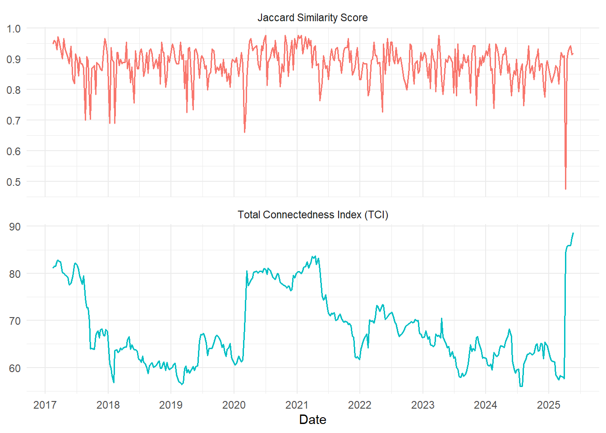
4.3.4 Modularity
To assess the presence of cluster structures, we computed the modularity evolution and the number of communities detected for each rolling window. The clustering method used to estimate the modularity and the communities was the Louvain algorithm (Blondel et al. (2008)). The average modularity score was \(0.179\) (\(\sigma = 0.039\)), with values ranging from a minimum of \(0.055\) to a maximum of \(0.265\). The communities detected fluctuated between 2 and 5, with \(96.5\%\) of the observation between 3 or 4 clusters. The networks where 5 communities were observed result in lower interconnectedness values, as a less clustered core structure identifies more nodes that could be treated as communities.
However, the low absolute values of modularity (remaining below the \(0.3\) threshold typically associated with strong community structure as described by Newman (2006)) indicate that the division in communities remains relatively minor, with the communities identified remaining tightly connected to the core, showing that the reinsurance market maintains a high degree of global interaction throughout the entire period. Furthermore, modularity presents a strong negative correlation with TCI (\(\rho = -0.698\), \(p<0.001\)), as visualized in Figure 4.6. This relationship shows that during periods of high systemic stress, an increase in total connectedness values reduces the distinction of regional or functional clusters, with variance influence propagating across the entire network without being contained in specific community boundaries.
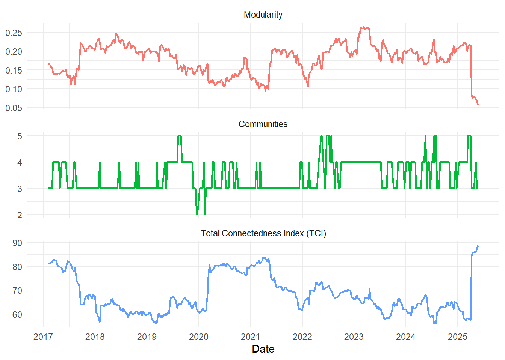
4.4 Firm Level Dynamics
Firm level analysis is performed to assess changing dynamics at node level, identifying reinsurers that consistently act as variance distributors and those who are variance receivers, and address the evolution of the main components of the network during different time periods. To grasp the changing environment, the Net strength (calculated as the difference between the out strength and in strength for each node) was used as proxy measure. We calculated the Net values for each rolling window, to spot the net variance contributors and the variance receiver nodes. We aggregated each region’s reinsurer to identify patterns related to specific areas to later move to the recognition of systemically important institutions that act as the main source of variance contribution over time.
4.4.1 Directional Connectedness
Figure 4.7 represents the values of net strength for each company across the 349 rolling windows. Firstly, some companies maintained persistently a negative net balance throughout the whole period, like Chinese reinsurers China Re (1508.HK) and Taiping Re (0966.HK), remaining net variance receiver in every window, consistent with their peripheral role identified in the static analysis, suggesting a limited spillover capacity due to their market position rather than an ephemeral phenomenon. Secondly, one sharp positive spikes are visible for the London’s company Hiscox Ltd (HSX.L) in the late 2021 and early 2022. The value can be associated with high spikes in the volatility value likely due to a high-profile dispute regarding “Business Interruption” claims with the UK Financial Conduct Authority. The spike in volatility elevated the British reinsurer to a strong variance contributor, as its spillover effect strongly affected the network. Third, the COVID-19 pandemic and the subsequent market crash in March 2020, and throughout the following year, reveals a clear separation of net roles. As the TCI entered the high connectedness regime, the contrast between net explainer (red) and net receiver (blue) sharpened, suggesting that lasting high connectedness periods could amplify the existing directional structure rather than raising all firms’ role uniformly, as strong contributors become stronger, while receivers absorb more variance. Finally, the most recent windows (2024-2025) exhibit a notable shift: Japanese companies show an increase in net values, while European firms show the opposite trend for the other companies, especially the strong net contributors European companies, to lower net values. These firm-level patterns aggregate into clear regional dynamics.
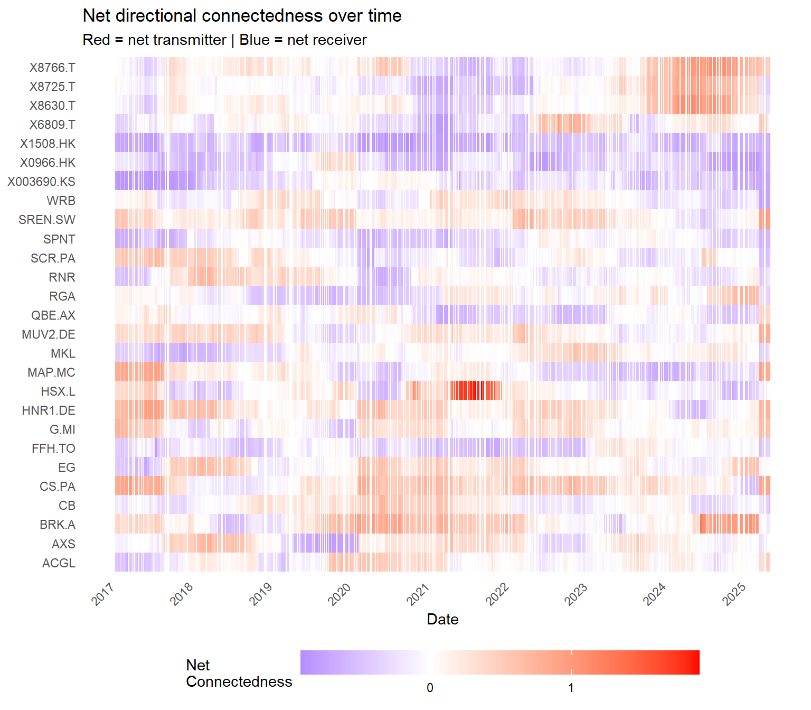
Regarding the aggregated regional net values, the trend remained constant for almost the entire sample.Asian companies remained in negative territory until the second half of 2023, reaching minimum peaks in July 2017 and April 2021. European companies on the other end remained net variance contributors until the second half of 2023, where the trend reverted in conjunction with the Asian role takeover. The European peak strength was achieved in July 2017, and presented high positive values after the pandemic burst, in 2020, for nearly 2 years, where a progressive decline began. American based companies presented a changing trend, with less extreme values compared to both the European and Asian markets, with movements typically ranging between the Asian and European values. The highest strength was reached in July 2021, where the market showed the highest similarity to the European one. As of the Australian market, the only representative for this continent was the company QBE.AX, which remained neutral (values around 0) for the entirety of the sample, without any notable increase or decrease.
From this analysis, represented graphically in Figure 4.8, a strong negative correlation between the Asian and the European markets (\(\rho = -0.74\), \(p<0.001\)) can be noted. These findings remain consistent with the results of Chapter 3, where the European market explained variance movements, especially for the Asian market. However, the magnitude of the strength varied significantly during the sample period, showing a reverting trend in the last years of the sample.
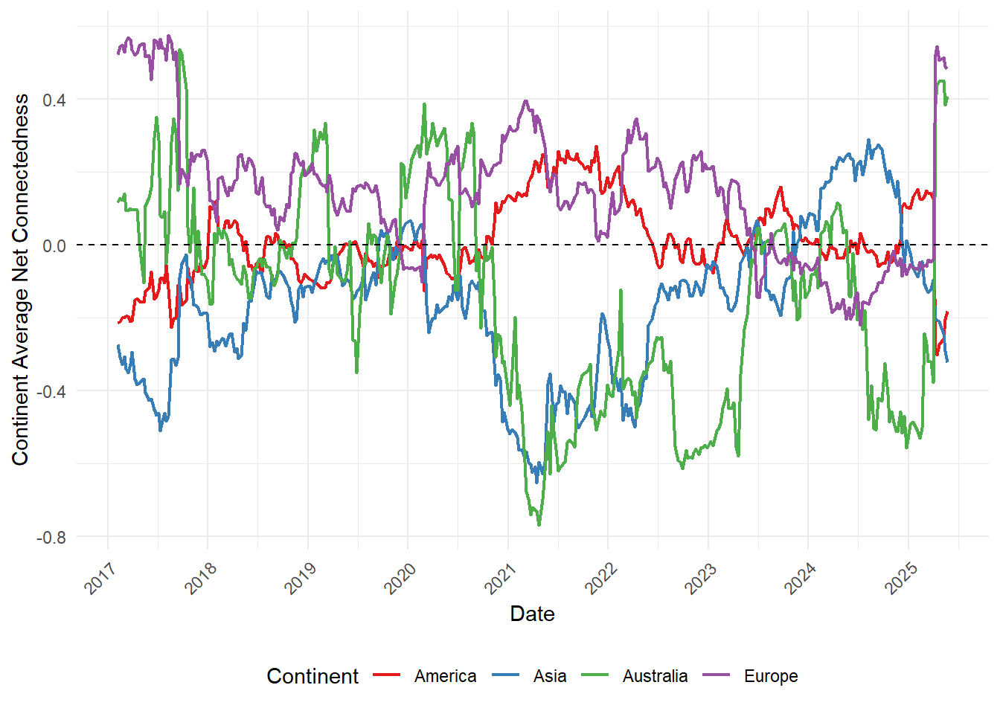
4.4.2 Centrality
Eigenvector centrality, PageRank, and betweenness centrality were computed for each of the 349 rolling windows to assess the core-periphery structure across the various market regimes. A notable finding emerges: Chubb (CB) and Mapfre (MAP.MC) rank among the top eigenvector and betweenness nodes, despite not being identified as central nodes in the static analysis. Both firms show consistently elevated eigenvector values throughout the sample (mean eigenvector of \(0.218\) for CB and \(0.210\) for MAP.MC), with relatively low standard deviation (\(0.035\) and \(0.060\)), showing a persistent structural position that was not captured by the full sample BVAR model.
To better grasp the dynamics of centrality, firms were classified into two groups based on their eigenvector centrality distribution: the five firms with the highest mean eigenvector centrality in the persistent hubs, while the five firms with the highest standard deviation as the reactive firms. Table 4.3 summarizes both groups.
| Category | Firm | Mean Eigen | SD eigen | Continent |
|---|---|---|---|---|
| Persistent | CB | 21.82 | 3.46 | Europe |
| Persistent | MUV2.DE | 21.31 | 4.54 | Europe |
| Persistent | MAP.MC | 21.08 | 6.01 | Europe |
| Persistent | MKL | 20.95 | 4.81 | America |
| Persistent | G.MI | 20.73 | 4.16 | Europe |
| Reactive | SPNT | 16.69 | 7.67 | America |
| Reactive | BRK.A | 15.04 | 7.43 | America |
| Reactive | X003690.KS | 12.83 | 7.86 | Asia |
| Reactive | QBE.AX | 11.67 | 8.04 | Australia |
| Reactive | HSX.L | 10.14 | 7.36 | America |
It is worth noting the geographic composition of the two groups: persistent hubs are predominantly European (Chubb, Munich Re, Mapfre Reasseguros, Generali), with Markel Co as the only non-European member,consistent with the European core documented in Chapter 3. Reactive firms, by contrast, are geographically dispersed — spanning Bermuda (SiriusPoint), the UK (Hiscox), Australia (QBE), US (Berkshire Hathaway), and South Korea (Korean Re). These firms occupy peripheral network positions during normal conditions but experience significant centrality shifts during stress episodes, transitioning from the periphery to the temporary core. This distinction carries the prudential message of the dynamic analysis. The rolling analysis reveals that hidden systemic risk does exist in a time-varying form, since reactive firms that appear peripher in the full sample of Chapter 3 become transmitters precisely during high connectedness regimes. A static SIFI screen would miss these conditionally systemic institutions. The two groups also differ in how their centrality metric co-move. For reactive firms, eigenvector and PageRank are highly correlated (\(\rho= 0.631\)), meaning that when these firms become influential they also become variance receivers. For persistent hubs instead, the correlation is lower (\(\rho = 0.217\)), indicating a difference between the influence and absorption phases, maintaining a more specialized structural role. Persistent hubs tend to behave as disciplined intermediaries that separate their phase of influence from their phase of absorption, whereas reactive firms are swept up as crisis absorber at the same moment when they transmit it.
Finally, comparing this classification with the later SIFI stability in the next section shows that central firms and net transmitters capture different dimensions of systemic importance. No company appears among both the persistent eigenvector companies and the chronic top-5 transmitters. This divergence suggests that the spillover magnitude may overlook firms that are structurally central to the network architecture, without necessarily dominating directional variance flows.
4.4.3 SIFI Stability
To identify a systemically important institution for the reinsurance market, we classified the companies that consistently appeared as the strongest net values.
The companies that appeared consistently as the variance explainer of others’ movements are reported in Table 4.4. The first 5 companies (CS.PA, BRK.A, HNR1.DE, SREN.SW, EG), net strength evolution are represented graphically in fig-top5_transmitter. Berkshire Hathaway (red line) is the most volatile firm in the group, as it fluctuates between being a net variance explainer and a variance receiver. AXA XL and Swiss Re exhibit the most consistent behavior, remaining in the positive territory for almost the whole sample. Their lines remain relatively stable, suggesting a consistent role in the industry. The German Hannover Re shows a significant regime shift, as it starts as a net variance contributor in 2017-2018, but experiences a downward trend in its net role, at the onset of COVID-19, a notable reversal for a firm that dominated variance contribution in the initial years. Everest Group instead showed the inverse trend, as it started as a variance receiver and transitioned to a variance contributor in late 2018 and early 2019.
| Company | Top 5 appearances | Top 5 pct. |
|---|---|---|
| CS.PA | 215 | 61.605 |
| BRK.A | 153 | 43.840 |
| HNR1.DE | 153 | 43.840 |
| SREN.SW | 116 | 33.238 |
| EG | 110 | 31.519 |
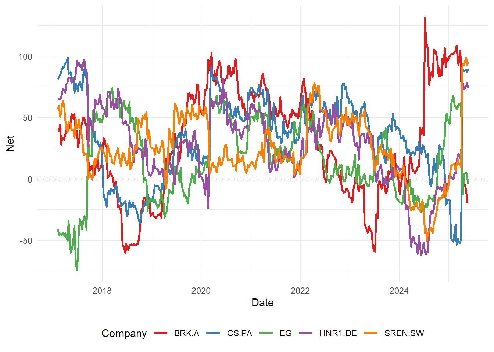
4.5 Event Analysis
This section focuses on the analysis of events that had an impact both on the reinsurance market directly, like natural disasters, and other major geopolitical and financial events that might have affected the reinsurance industry indirectly, to assess the impact over the estimated connectedness of the system and the response of the network dynamics to these events.
4.5.0.1 Event Selection
The events reported are gathered through web searches and annual reports over the main events sustained by the reinsurance companies analyzed. The cases considered are the major occurrences of the last decade, considering both the events related directly to the reinsurance market and those affecting the financial and economic world as a whole in terms of magnitude of social and economic impact. The events analyzed are 13 and span through five categories. Seven are natural catastrophes ranging from the HIM hurricanes trio of 2017 ($92B insured losses) to the 2025 Los Angeles wildfires ($45B), testing liability-side propagation through underwriting claims. Three financial events - the 2018 Q4 equity sell-off, the 2023 SVB collapse, and the 2025 US trading tariffs - shock-test the asset-side propagation through investment portfolio revaluation. The 2022 Ukraine conflict represents a geopolitical event with mainly asset-side contagion channels, while the 2024 CrowdStrike outage represents an emerging cyber risk. The COVID-19 pandemic uniquely combined both channels, with simultaneous equity market collapse and widespread insurance claims. Table 4.5 reports the full event list with estimated insured losses and shock channel specification, while Figure 4.10 overlays the event dates onto the TCI time series, allowing visual identification of the system’s connectedness response to each shock.
| Date | Event | Type | Estimated Insured Loss | Loss Type |
|---|---|---|---|---|
| 2017-09-01 | HIM Hurricanes | NatCat | 92 | Liability-side |
| 2018-11-15 | CA Wildfires | NatCat | 18 | Liability-side |
| 2018-12-24 | Equity Crash | Financial | NA | Asset-side |
| 2020-03-16 | COVID-19 | Pandemic | 40 | Both |
| 2021-02-15 | Winter Storm Uri | NatCat | 15 | Liability-side |
| 2022-02-24 | Ukraine War | Geopolitical | 10 | Asset-side |
| 2022-09-28 | Hurricane Ian | NatCat | 55 | Liability-side |
| 2023-03-10 | SVB Collapse | Financial | NA | Asset-side |
| 2024-07-19 | CrowdStrike | Cyber | NA | Liability-side |
| 2024-10-05 | Helene Milton Hurricane | NatCat | 44 | Liability-side |
| 2024-10-29 | Spanish Floods | NatCat | 4 | Liability-side |
| 2025-01-07 | LA Wildfires | NatCat | 45 | Liability-side |
| 2025-04-02 | Trump Tariffs | Financial | NA | Asset-side |
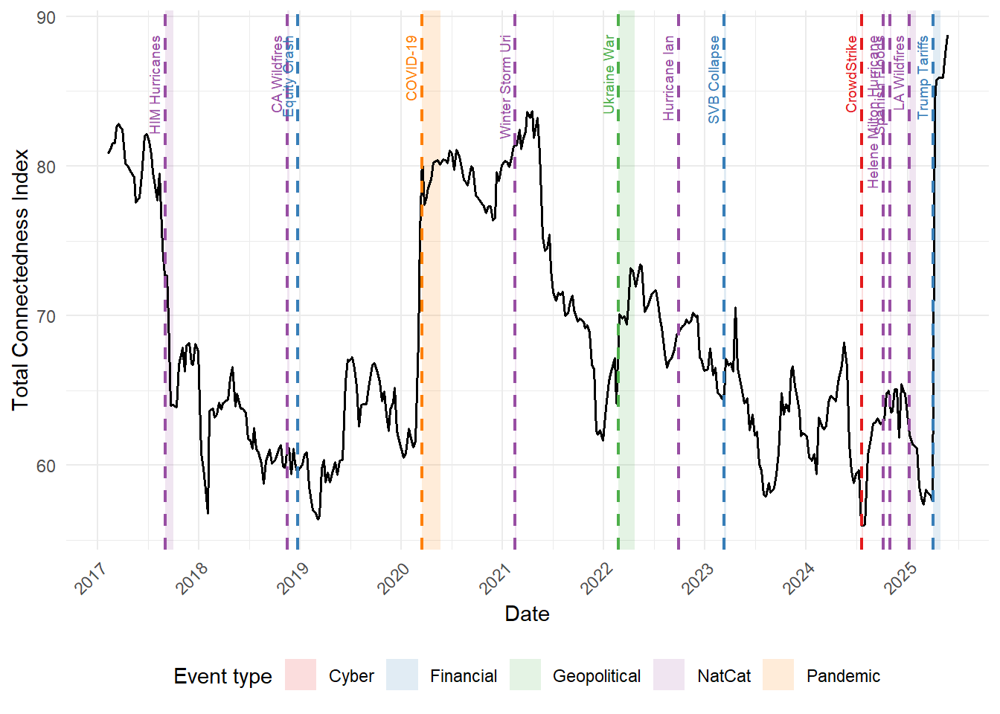
4.5.0.2 Event Impact Ranking
To assess the impact that each event yields on the network dynamics, we observed the Total connectedness evolution around the time of the event. The TC mean of the previous 20 windows and the peak total connectedness measure for the next 10 windows were computed (a 50-day time period), and compared to identify the events that created the highest change in the TCI. These findings are reported in Table 4.6, and are classified by their impact on the TC response. To formally assess whether the observed event response are distinguishable from random fluctuations, we conducted three statistical tests. First, a Monte Carlo permutation test drawing 10,000 random 11 event clusters from the 349 window pool yields \(p = 0.108\) for the mean \(\Delta TCI\) across the pooled event set. Second, a Kruskal-Wallis test across the three loss-type groups returns \(H = 2.13\) (\(df=2\), \(p = 0.344\)). Third, a one-side Wilcoxon rank sum test comparing asset-side versus liability-side \(\Delta TCI\) values yields \(W = 22\), \(p=0.184\). None of these test is significant, reflecting the fundamental constraint of having only a 13-event sample. The event analysis is therefore exploratory: the patterns described below constitute descriptive evidence for hypothesis generation rather than confirmed causal claims. Nevertheless, descriptive evidence reveals a consistent pattern: the two events producing the highest TCI increases - the Trump tariff shock of April 2025, accounting for a \(\Delta TCI=26.74\) and the highest TCI peak for the whole sample (\(88.75\)), and the COVID-19 market crash of March 2020, for a \(\Delta TCI = 16.37\) - both involved asset-side transmission through simultaneous investment portfolio revaluation. By contrast, the largest pure liability-side event, the HIM hurricane trio, with estimated insured losses of $92 billion, produced a negative TCI change, consistent with the idiosyncratic rather than systemic risk propagation.
Together, these patterns point to the chapter’s central economic conclusion: the reinsurance sector’s systemic risk originates on the asset side, through its role as a large holder of correlated financial assets, rather than on the liability side of catastrophe underwriting. The reduction of interconnectedness value in the most sever catastrophe loss is not a paradox, but rather an evidence of the risk-pooling model working as designed, since large insured losses are absorbed idiosyncratically by the exposed firms and do not become contagious. This aligns with the FSB and IAIS view that traditional underwriting activities does not pose systemic risk, but this is rather created from financial-market activities.
One notable exception is the Los Angeles wildfires in January 2025 (\(\Delta TCI = 21.89)\), classified as a liability-side. However, the post-event window for this event coincides with the turmoil related to the market uncertainty following the January 20 American presidential inauguration, suggesting that the measured TCI increase reflects the asset-side pressure rather than a pure underwriting loss response. It is also worth noting that the LA wildfires and the Trump tariffs events do not have a full subsequent window, given their recent nature, not allowing to verify the complete subsequent response of the system to these events.
| Event | Loss Type | TCI pre | TCI post peak | Change | Pct. Change |
|---|---|---|---|---|---|
| Trump Tariffs | Asset-side | 62.01 | 88.75 | 26.74 | 43.12 |
| LA Wildfires | Liability-side | 62.46 | 84.35 | 21.89 | 35.04 |
| COVID-19 | Both | 64.16 | 80.53 | 16.37 | 25.51 |
| Ukraine War | Asset-side | 66.89 | 73.42 | 6.53 | 9.77 |
| Winter Storm Uri | Liability-side | 78.75 | 83.68 | 4.92 | 6.25 |
| Spanish Floods | Liability-side | 61.77 | 65.42 | 3.65 | 5.91 |
| Helene Milton Hurricane | Liability-side | 61.85 | 65.42 | 3.57 | 5.77 |
| SVB Collapse | Asset-side | 67.85 | 70.54 | 2.68 | 3.95 |
| CrowdStrike | Liability-side | 62.75 | 64.78 | 2.02 | 3.23 |
| Equity Crash | Asset-side | 60.60 | 60.88 | 0.28 | 0.46 |
| CA Wildfires | Liability-side | 61.19 | 61.17 | -0.02 | -0.04 |
| Hurricane Ian | Liability-side | 70.28 | 70.22 | -0.07 | -0.10 |
| HIM Hurricanes | Liability-side | 80.06 | 72.70 | -7.36 | -9.19 |
4.5.1 Deep-Dive Analysis
Five events are selected to perform a deeper analysis on the system’s connectedness dynamics, each representing a distinct shock archetype:
- HIM hurricanes (2017): the largest liability-side shock in the sample ($92B), testing whether catastrophe claims propagate systemically or remain idiosyncratic;
- COVID-19 (2020): a simultaneous asset-side and liability-side shock, combining a global equity market crash with widespread business interruption and event cancellation claims;
- Ukraine conflict (2022): a geopolitical shock transmitting primarily through the asset-side via energy price volatility, sanctions-related asset write-downs, and sovereign risk repricing;
- SVB collapse (2023): a financial sector shock testing contagion from banking sector credit risk to the reinsurer investment portfolios;
- Trump “Liberation Day” tariffs (2025): a pure asset-side shock, producing the highest TCI in the sample, included despite the limited post-event window.
These five events were selected to represent distinct shock archetypes, enabling a comparative analysis of how different transmission channels affect connectedness dynamics. For each event, the short-run TCI reaction is analyzed by identifying the peak value within the subsequent 40 rolling windows. The pre-crisis mean is computed over the 20 windows preceding the event; the post-crisis mean is computed over windows 20 through 40 following the event, excluding the acute phase to assess whether the shock induced a persistent regime change.
The HIM hurricanes generated the highest negative response to the TC (\(\Delta TCI = -7.36\)), as the event occurred during an already-declining trend. The connectedness level before the event was on a high regime state, with an already mean reverting trend, as the peak was registered 8 windows prior to the event. However the massive NatCat event and the estimated loss of 92$B did not stop the declining trend. This supports the idea that liability-side losses are absorbed asymmetrically by the system, as only exposed firms are hit by the shock, which reduces the co-movement rather than increasing it. This suggests that liability-side shocks may remain idiosyncratic rather than systemic. The COVID-19 pandemic, the second highest \(\Delta TCI\) change among the selected events, showed a steady increase after the initial surge following the event, with a post-crisis mean 23% above the pre-crisis level, computed for windows 20 to 40. This event caused a regime change, moving a low connected system to a high connected one, with the peak registered at the 40\(^{th}\) window, meaning that the increase persisted during the entire period, with only brief temporary dips in the TCI within the overall upward trend. The equity market crash that spanned multiple stock exchanges and hit multiple sectors shows that the reaction of the system was symmetric and timed, as all reinsurers are affected by the event simultaneously. This resulted in a more connected network. A similar reaction is visible from another asset-side event, the Trump Tariffs of April 2025. Despite the right-censoring of the post-event window, the acute response was fully captured, resulting in the highest TCI change between the peak and the pre-event crisis, with a \(43.12\%\) increase. Although the post-crisis mean cannot be computed, due to the missing windows, the volatility shocks caused by the market crash and equity market uncertainty induced co-movement among reinsurance companies, increasing the connectedness of the system.
The outbreak of the Russian-Ukrainian conflict instead caused a delayed response that reached its peak value after 8 rolling windows, while just 5 were needed for the SVB collapse. Moreover, the two events had an equal response subsequent to the peak TCI value, as both the financial crisis of 2023 and the Ukraine war of 2022 recovered just after one rolling window, with the bank sector turmoil causing a reduction from the pre crisis level by \(\Delta TCI = 2.68\), while the geopolitical event left the TCI almost unchanged (\(\Delta TCI = 7\)), not producing significant regime changes. This restricted effect on TCI shows that the contagion to the reinsurance market was contained. Instead, for the Ukrainian case, the system responded more slowly, stabilizing the post crisis mean after 16 windows. Despite the initial similar reaction, the geopolitical importance of the conflict and the relative instability it introduced meant that its effect was more persistent over time.
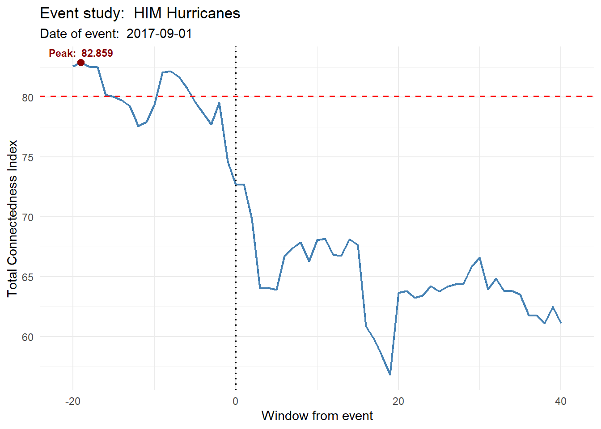
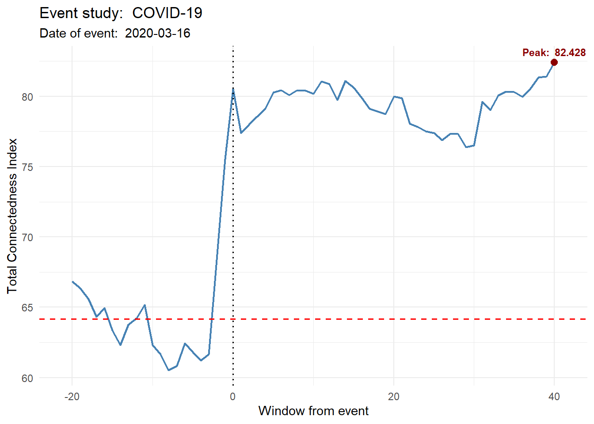
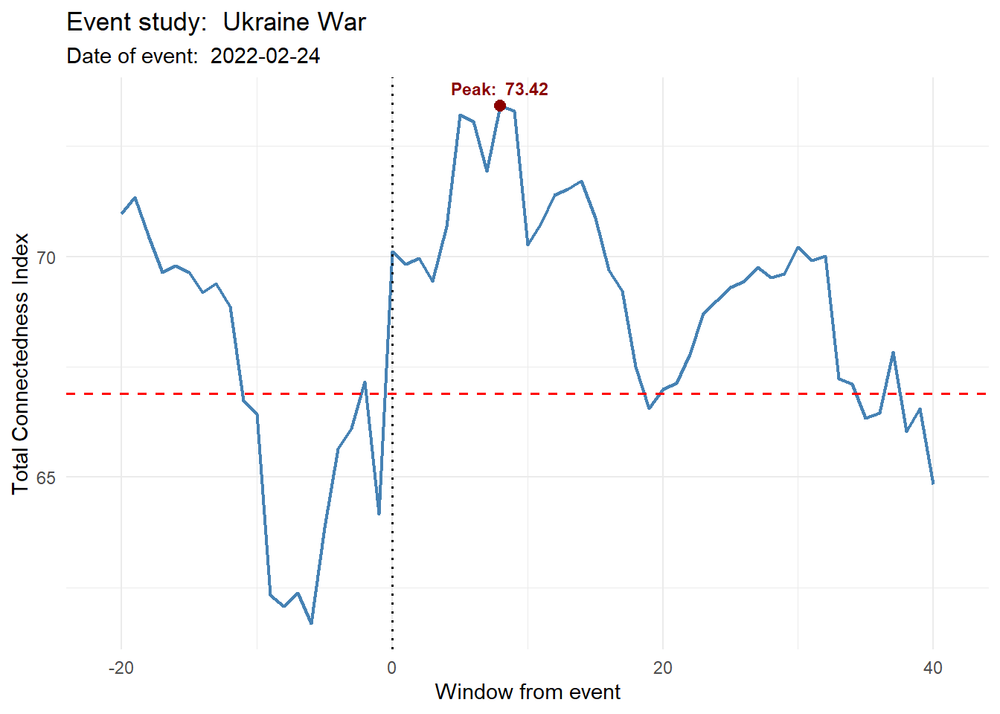
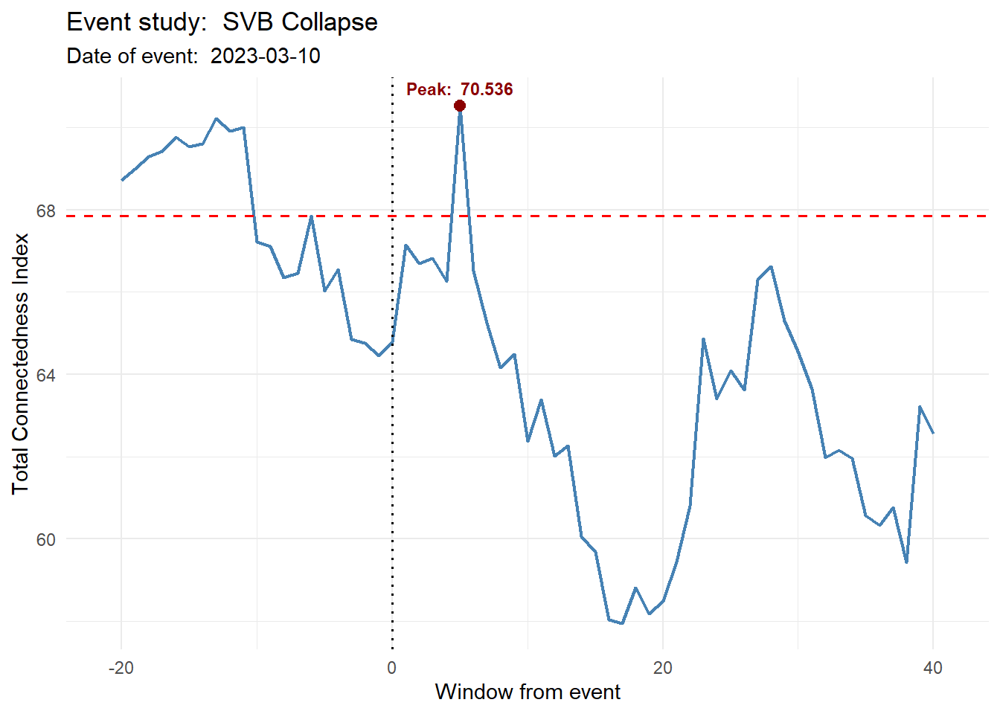
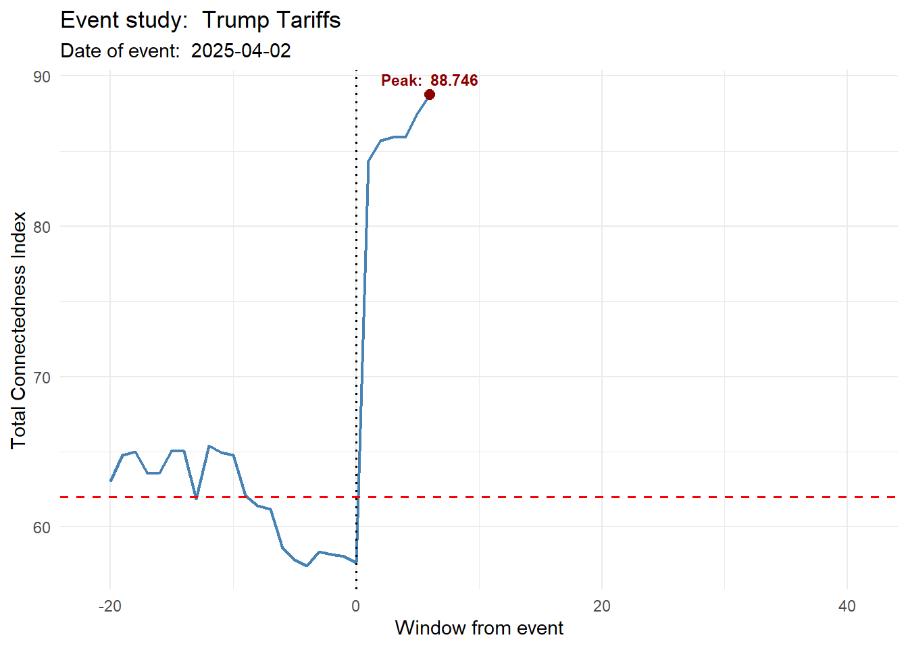
| HIM Hurricanes | COVID-19 | Ukraine War | SVB Collapse | Trump Tariffs | |
|---|---|---|---|---|---|
| Pre crisis mean | 80.06 | 64.16 | 66.89 | 67.85 | 62.01 |
| Peak TCI value | 82.86 | 82.43 | 73.42 | 70.54 | 88.75 |
| Peak TCI window | -19.00 | 40.00 | 8.00 | 5.00 | 6.00 |
| Recovery time | NA | NA | 1.00 | 1.00 | NA |
| Post crisis TCI mean | 63.59 | 79.06 | 68.09 | 62.58 | NA |
| Change | -16.47 | 14.90 | 1.20 | -5.28 | NA |
| Pct. change | -20.57 | 23.22 | 1.79 | -7.78 | NA |
Figure 4.27 reports the progression of net strength for the six firms displaying the greatest absolute variation in their event-related roles, differentiation between firms whose net transmitter role increased (solid lines) and those whose role decreased (dashed lines).
4.5.1.1 HIM Hurricanes
The liability-side shock produces a clear shift in roles among specialty reinsurers. RenaissanceRe, whose business model is concentrated in US property catastrophe reinsurance, transitions from the dominant net transmitter to a net receiver, consistent with its disproportionate exposure to HIM losses. Conversely, AXA XL’s diversified European platform increased its net transmitter role, suggesting that the shock redistributes influence from exposed specialists toward less-exposed diversified generalists. This asymmetric firm-level response explains the negative aggregate TCI change: rather than synchronizing the network, the NatCat shock fragmented it along geographic exposure lines.
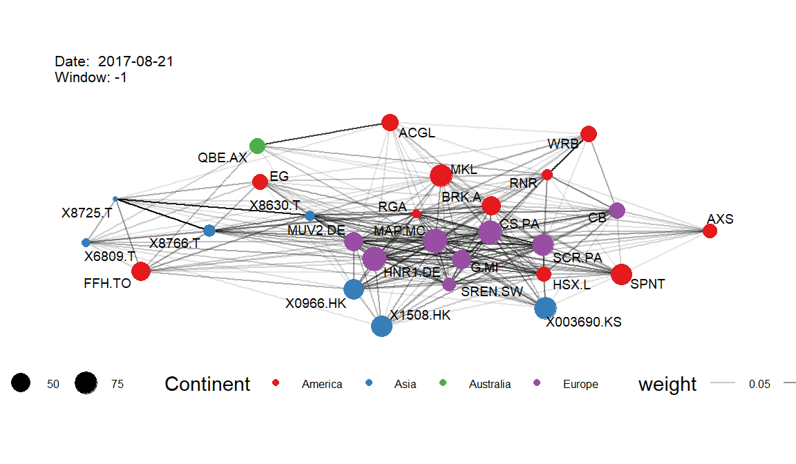
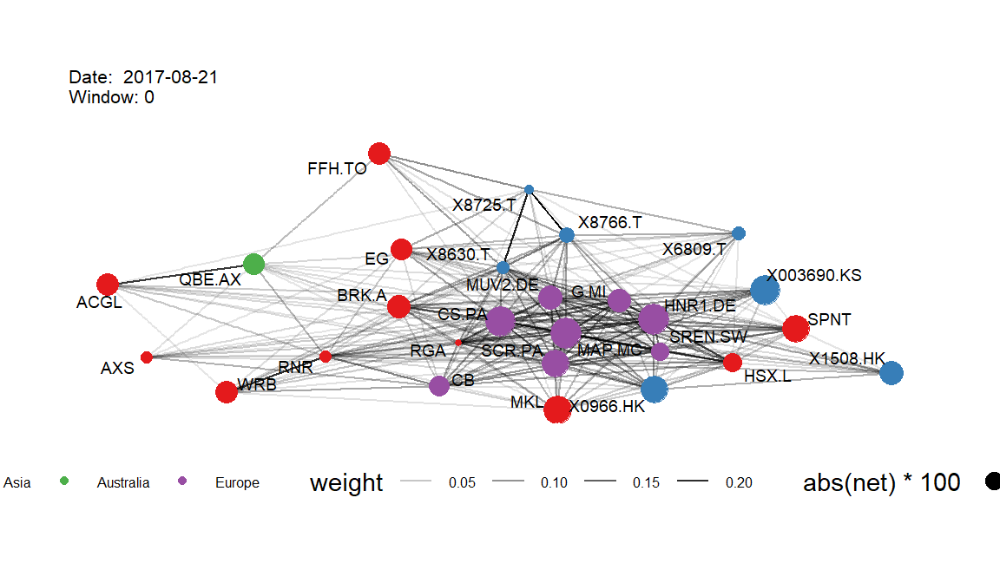
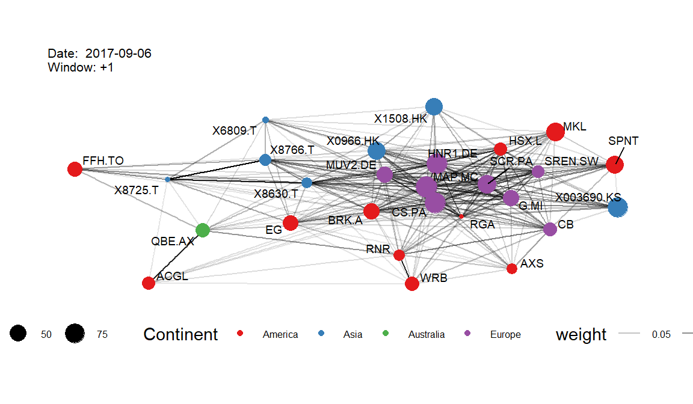
As Figure 4.12 through Figure 4.14 shows, the networks display a trend of declining TCI value, with subsequent windows showing a more dispersed periphery, with net variance contribution roles becoming less clear and more uniform across the network. This trend is consistent with what is shown in Figure 4.11, and provide a visual representation of the ability of the sector to sustain even large catastrophical events, without significantly increasing the interconnectedness of the system, rising the volatility spillovers between nodes.
4.5.1.2 COVID-19
The simultaneous asset-side and liability-side shock rearrange roles among a different dimensions. European reinsurers Generali and Munich Re, among the largest by total assets, emerge with increased net variance explainer roles. Their dominant investment portfolios, heavily allocated to European sovereign and corporate bonds, experience simultaneous mark-to-market losses during the March 2020 liquidity shock, consistent with the asset-side channel amplifying their influence on the network. Contrariwise, Asian firms (Taiping Re and The Toa Re) and specialty player (QBE) decline. The pattern is consistent with European equity markets, heavily weighted in reinsurance portfolios, driving the initial contagion signal, while Asian and Australian firms respond with delay.
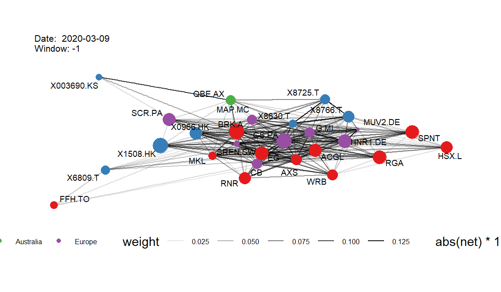
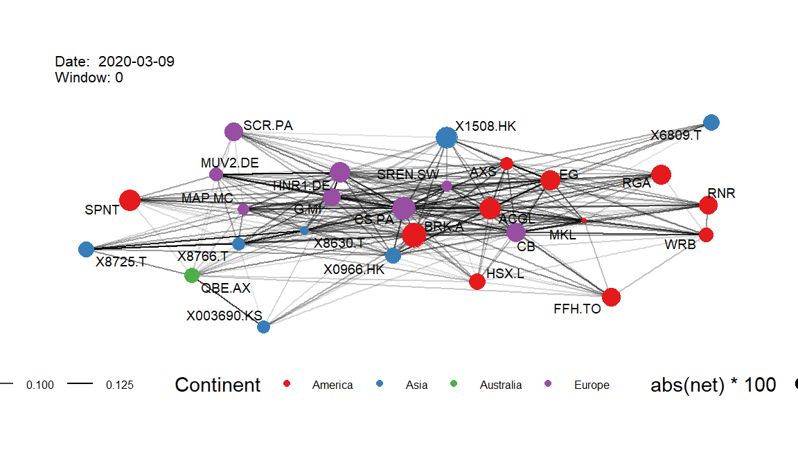
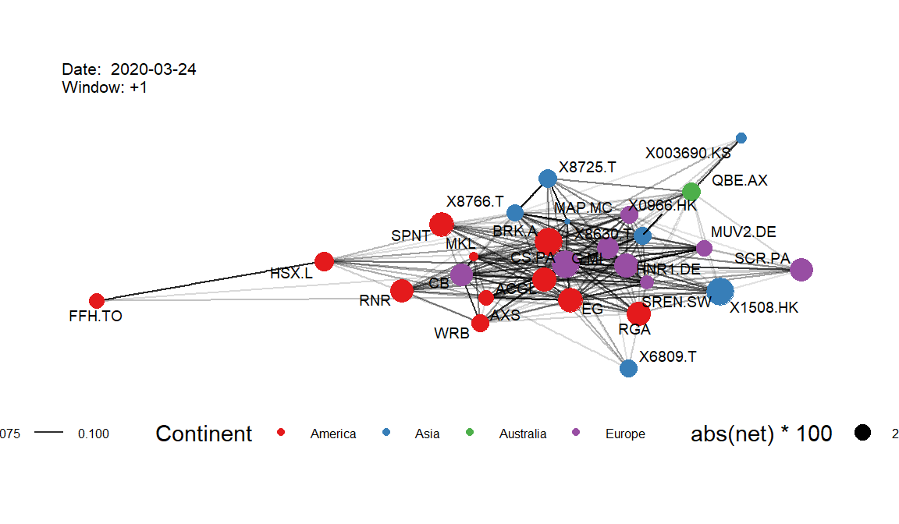
Visual representation of the structure dynamics and main cluster evolution can be seen in Figure 4.15, Figure 4.16, and Figure 4.17: all windows show European reinsurers forming a dense central cluster connected by thicker edges, while Asian firms remain at the periphery of the network with smaller sizes. The high connectedness values for the pre-event (\(77\)), event (\(80.5\)) and post-event (\(77.50\)) are a consequence of the spike in the previous windows, as shown in Figure 4.11. The tight connectedness value (all in the high regime section), and the consequent close disposition of the nodes in the plots show the systemic vulnerability of crisis of this type: the volatility explanation spread more rapidly due to the conformation given by the stress period, and the high interconnecetedness that the global reinsruance market has.
4.5.1.3 Ukraine War
Although the Ukrainian war affected the European continent more closely, the highest changes in net variance explanation roles did not include dominant European reinsurers. The highest positive changes were in fact seen for the Japanese (6809.T and 8725.T), while Hiscox Ltd saw its net variance role decline. However, the absence of major European spikes in net strength values can be explained looking at the recent past: COVID-19 already created a strong position of variance contribution to the whole market from major European and American reinsurers (CS.PA, SREN.SW, HNR1.DE), as Figure 4.7 showed. The geopolitical crisis of early 2022 consolidated this market condition rather radically disrupting it.
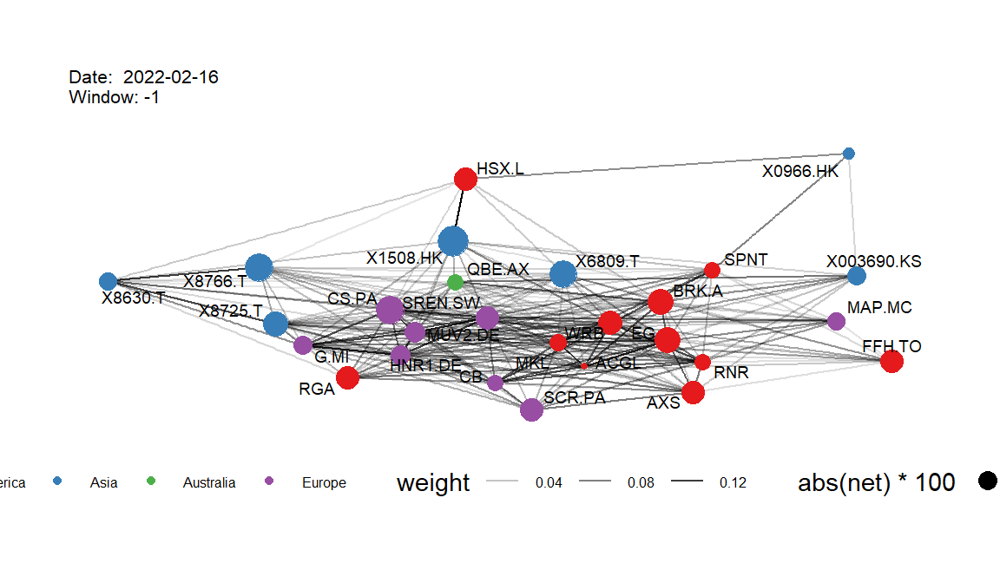
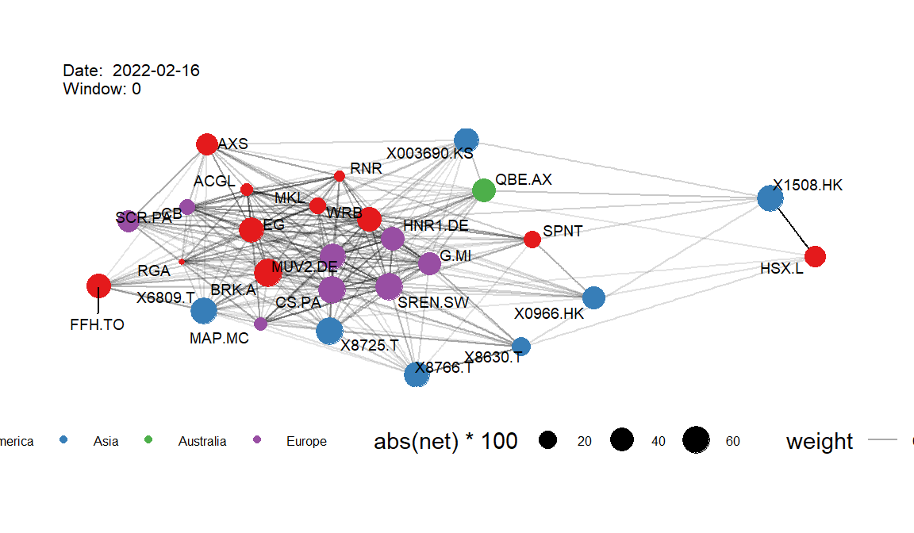
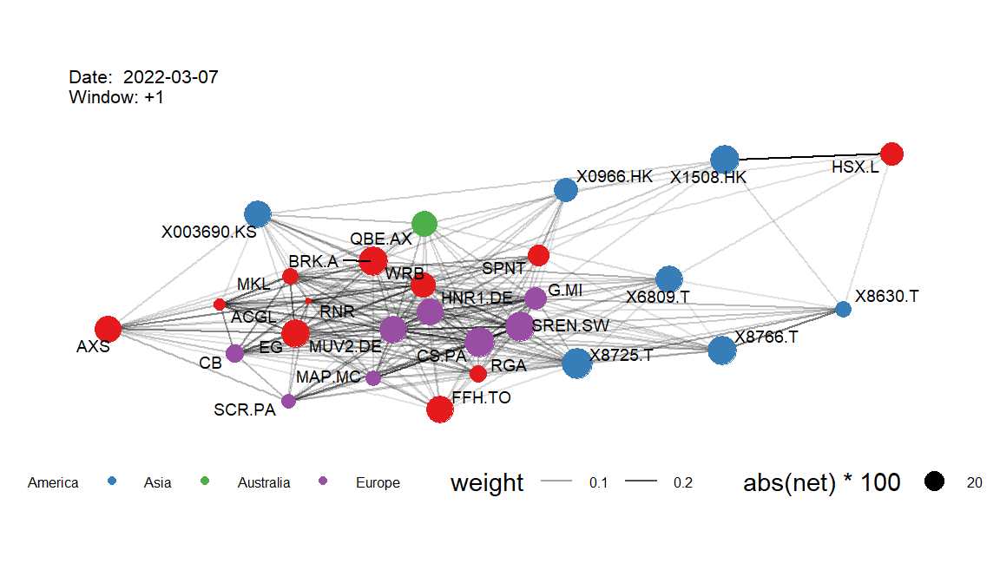
Figure 4.18 shows that the pre-event network exhibits elevated node sizes, continuing the high connectedness regime established during COVID-19. The relative connectedness measure remains stable throughout the event and the post-event windows (Figure 4.19, Figure 4.20), without any relevant detectable structural change.
4.5.1.4 SVB Collapse
The banking crisis of March 2023 saw the Japanese reinsurer Tokio Marine, changing its position to a net variance receiver to a net variance explainer. Even more marked was the movement of AXIS Capital, which moved from a net strength value of \(\approx - 0.5\) to a peak value of \(\approx 0.8\). This is consistent with the firm’s exposure to US fixed-income assets and the interest rate shock that encouraged SVB’s failure and simultaneously created mark-to-market volatility across Japanese and dollar denominated bond portfolios, increasing the variance contribution of these companies in the network. Swiss Re, Toa Re and Hannover Re instead moved in the opposite direction, transitioning to net receiver positions. The SVB crisis activated peripheral firms with asset or liability exposure in the US banking sector.
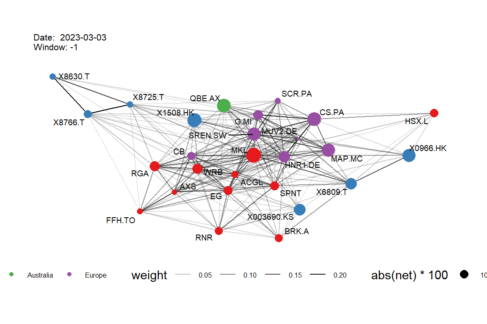
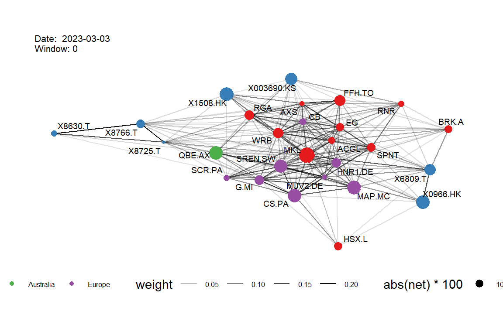
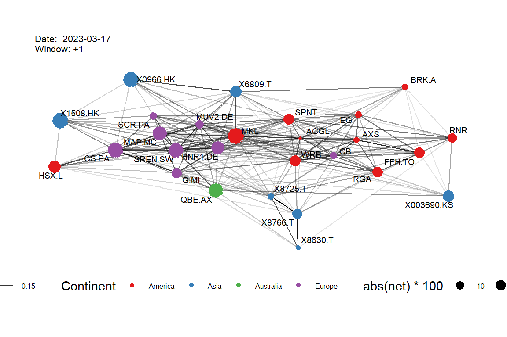
Figure 4.23 clearly shows an already increased node size for Asian companies, compared to Figure 4.22 and Figure 4.21, consistent with the finding in Section 4.4.1 where the trend of major variance contributors started to shift towards Japanese and Asian reinsurers. The increased connectedness is coherent with what is shown in Figure 4.11, as the post-event window saw a TCI increase of \(2.64\) indicating a relatively quick market response to the event, but a later tendency to return to the pre-event TCI measure.
4.5.1.5 Trump Tariffs
The pure asset-side shock compresses firm-level net strength toward the mean, as the indiscriminate equity-bond selloff affects all reinsurers simultaneously. Swiss Re, the pre-crisis dominant transmitter (Net Strength \(\approx 1.0\)), declines sharply, while previously net receiver firms, like Berkshire Hathaway, AXA XL, and MAPFRE, increase rapidly becoming the net variance contributor companies of the system. The post-event window is truncated due to sample end, limiting interpretation of the post-crisis regime.
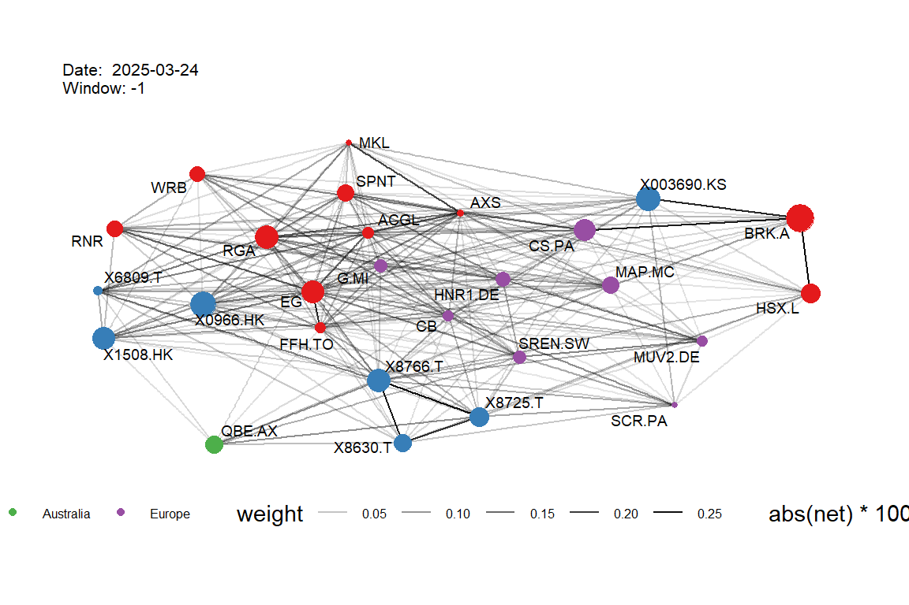
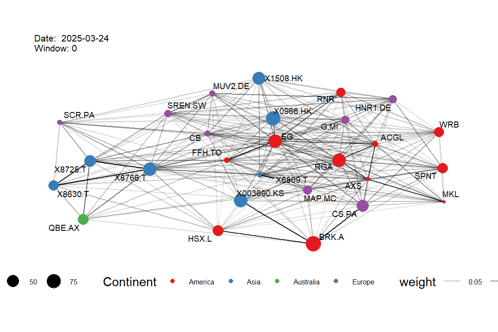
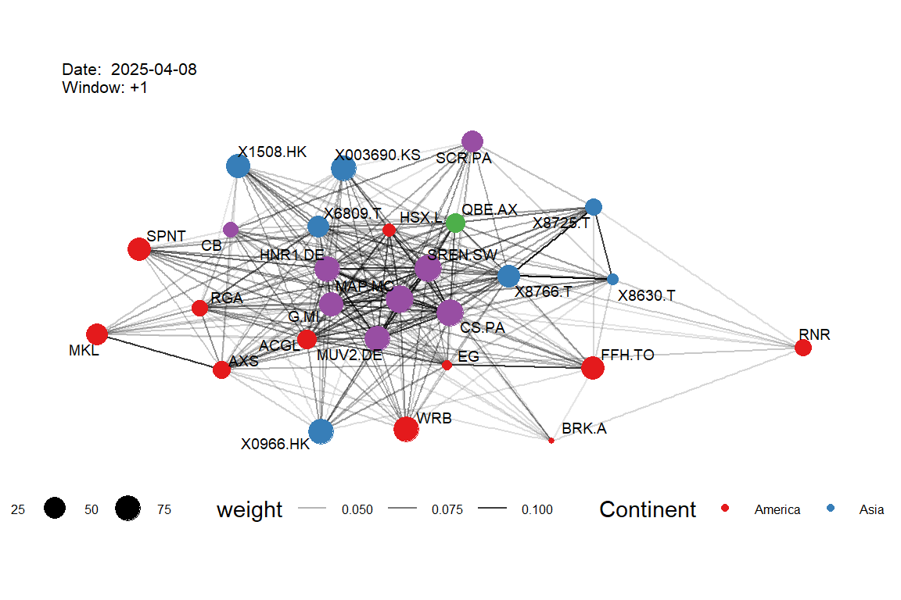
The Trump tariffs event provides the clearest visual contrast across all five events. The pre-event network (Figure 4.24) is dispersed with major variance contribution roles in American and Asian companies, as the TCI value confirms (\(57.62\)). By window +1 (Figure 4.26), all nodes collapse into a tightly compressed center, increasing the connectedness index by \(26.74\) and showing the return as variance explainer of European reinsurers, a behavior possibly explained by the historical commercial partnership between European countries and the US, that faced increasing tumbles with US tariffs threats. The rapid response and structural change of the network show that systemic events external to the industry can have an impact on the dynamics of variance spillovers.
4.5.1.6 Cross-Event Stability of Firm’s Rankings
To test whether the ranking of net transmitters is preserved across shock types, the pairwise Spearman rank correlation of company net strength ranking across the five crisis networks is computed (Table 4.8). Two pairs of events show statistical significance at the 5% level: COVID-19 and Ukraine conflict (\(\rho = 0.466\), \(p=0.012\)), and the Ukraine conflict and the SVB collapse (\(\rho=0.462\), \(p=0.012\)). This suggests that for moderate shocks with an asset-side component, the structural hierarchy of net transmitter, dominated by large European reinsurers, is partially preserved. However, neither the HIM hurricanes nor the Trump tariff shock exhibit statistical significance with any other.
| Event 1 | Event 2 | \(\rho\) | \(p\)-value |
|---|---|---|---|
| COVID-19 | Ukraine War | 0.53 | 0.00 |
| COVID-19 | SVB Collapse | 0.12 | 0.56 |
| COVID-19 | HIM Hurricanes | 0.30 | 0.12 |
| COVID-19 | Trump Tariffs | 0.21 | 0.28 |
| Ukraine War | SVB Collapse | 0.40 | 0.04 |
| Ukraine War | HIM Hurricanes | 0.40 | 0.04 |
| Ukraine War | Trump Tariffs | 0.23 | 0.24 |
| SVB Collapse | HIM Hurricanes | 0.12 | 0.56 |
| SVB Collapse | Trump Tariffs | 0.34 | 0.09 |
| HIM Hurricanes | Trump Tariffs | 0.30 | 0.13 |
4.5.2 Cross-Event Net Delta Correlation
A separate analysis test whether the same firms consistently change their systemic role in the same direction across events, we computed the spearman rank correlation of net strength variations (\(\Delta\) Net Strength) for the 27 companies in each event pair (Table 4.9). No pairwise correlation achieved statistical significance following adjustments for multiple comparisons. The strongest observed relationship is between the SVB collapse and Trump tariff shock, indicating that firms exhibiting heightened net transmitter functionality during the banking crisis subsequently demonstrates reduced functionality during the trade policy shock, and vice versa. The visual evidence from Figure 4.27 confirms this result: the company composition does not follow a specific pattern, and varies across events, with no single firm consistently maintaining a dominant position. This absence of stable, cross-event roles implies that firm-level systemic importance within the reinsurance sector is contingent upon the nature of the shock, rather than reflecting a fixed structural property of the network.
| Event 1 | Event 2 | \(\rho\) | \(p\)-value |
|---|---|---|---|
| HIM Hurricanes | COVID-19 | -0.22 | 0.28 |
| HIM Hurricanes | Ukraine War | 0.04 | 0.86 |
| HIM Hurricanes | SVB Collapse | 0.40 | 0.04 |
| HIM Hurricanes | Trump Tariffs | -0.35 | 0.07 |
| COVID-19 | Ukraine War | -0.35 | 0.07 |
| COVID-19 | SVB Collapse | -0.21 | 0.30 |
| COVID-19 | Trump Tariffs | 0.22 | 0.26 |
| Ukraine War | SVB Collapse | -0.35 | 0.08 |
| Ukraine War | Trump Tariffs | -0.06 | 0.78 |
| SVB Collapse | Trump Tariffs | -0.29 | 0.14 |
Taken together, these results suggest a partial stable core hierarchy of net transmitters that persists across moderate asset-side shocks, co-existing with event-specific perturbations that prevent any single firm from consistently amplifying or absorbing shocks across all crisis types.
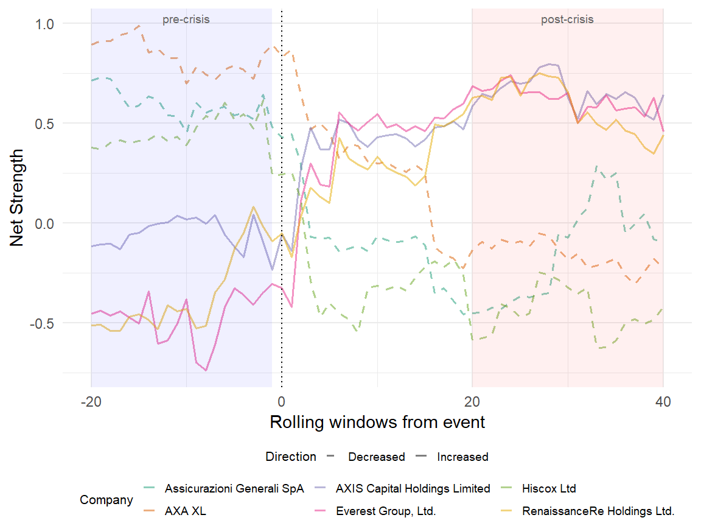
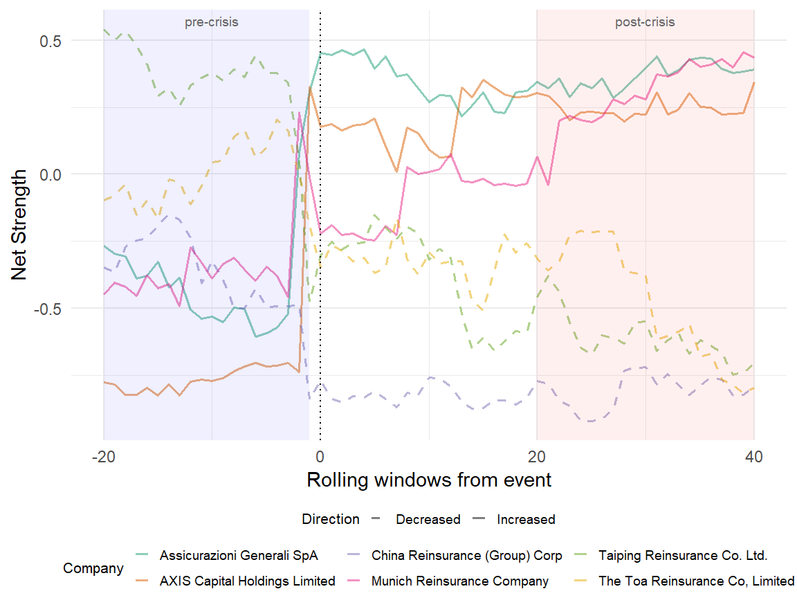
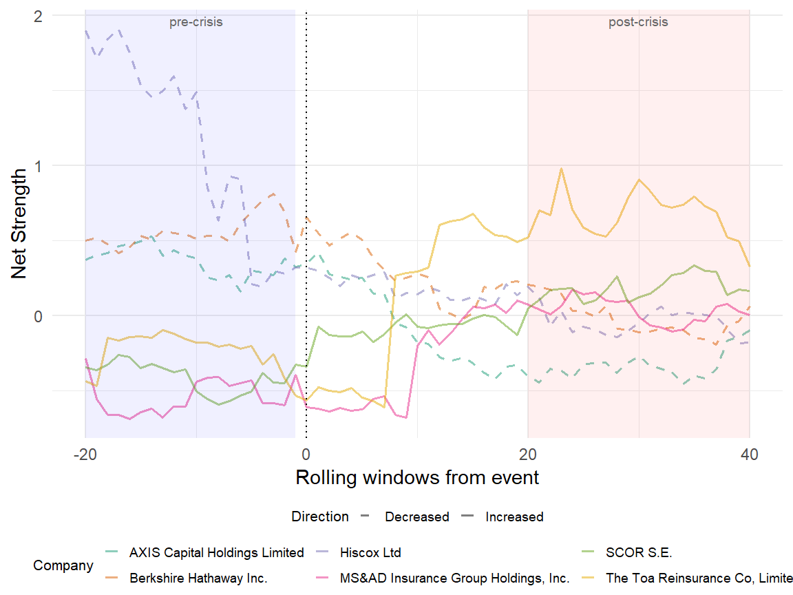
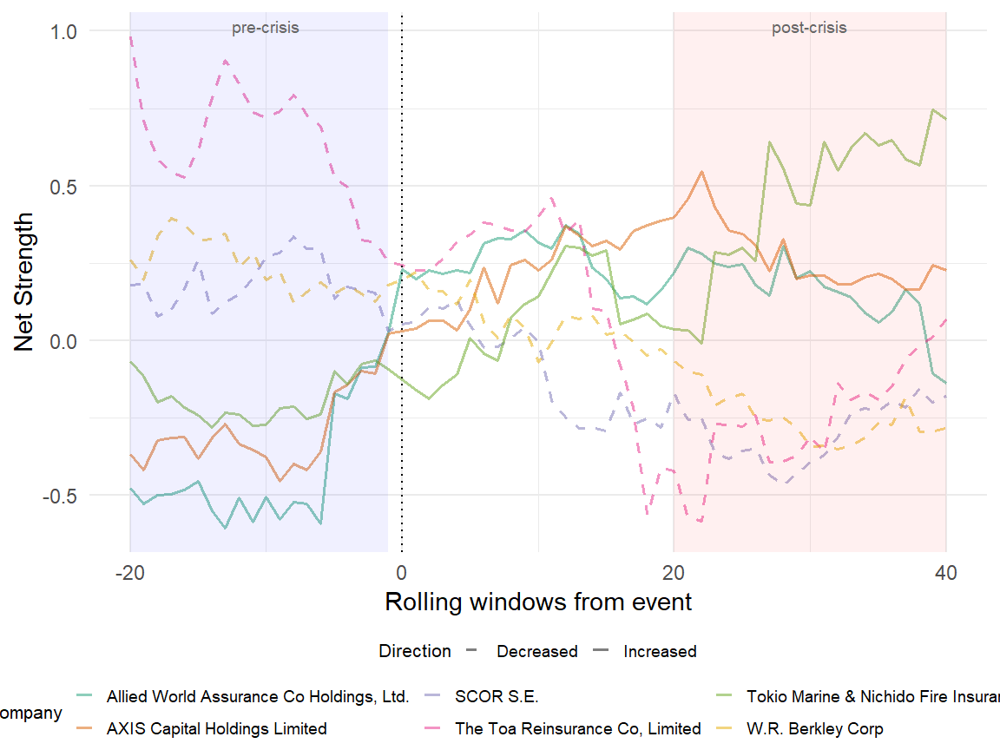
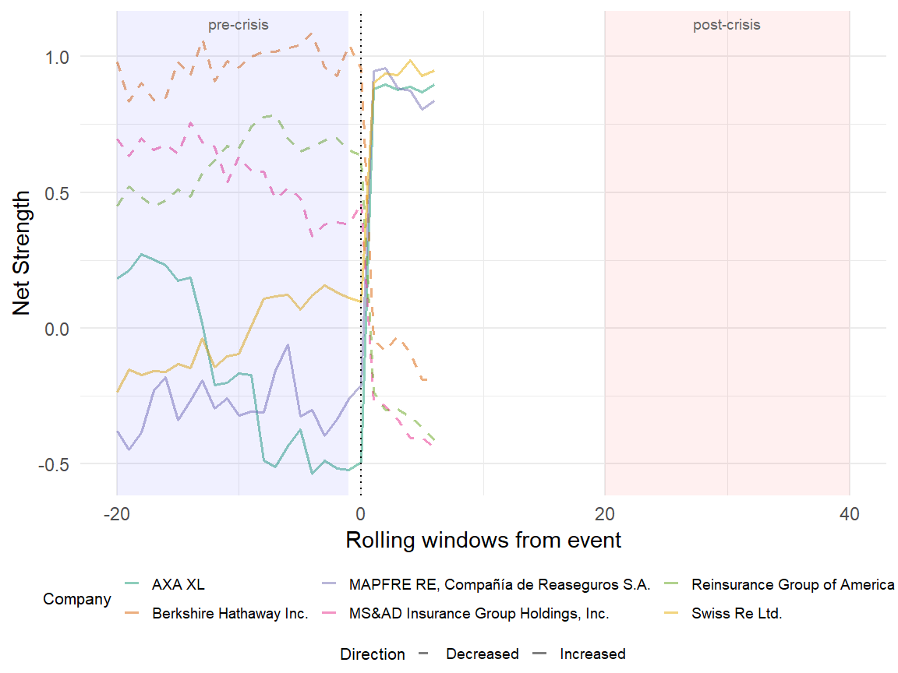
4.6 Early Warning and Structural Instability
4.6.1 Early Warning Signal - VIX Analysis
To test the predictive capacity of TCI relative to the whole market movements, we tested the reinsurance network’s volatility against the Chicago Board Options Exchange Volatility Index (VIX), which is usually used as a proxy for market volatility, as in Diebold and Yılmaz (2014). The data for the VIX were collected from Yahoo Finance. To ensure alignment with the rolling window methodology - which used a 5-day step size - the VIX was aggregated into a 5-day trailing average, mapping the macroeconomic sentiment directly to the time-step of the connectedness index. Furthermore, to avoid spurious regression problem, as highlighted by Granger and Newbold (1974), related to the high persistent TCI resulting from the rolling window construction - attributable to 98% of shared data created by the 5-day shift - the cross-correlation was evaluated on the first difference of the two series (\(\Delta TCI\) and \(\Delta VIX\)). The innovation series were then tested applying a cross correlation function and a multi-lead lag correlation, and the latter results are graphically shown in Figure 4.28.
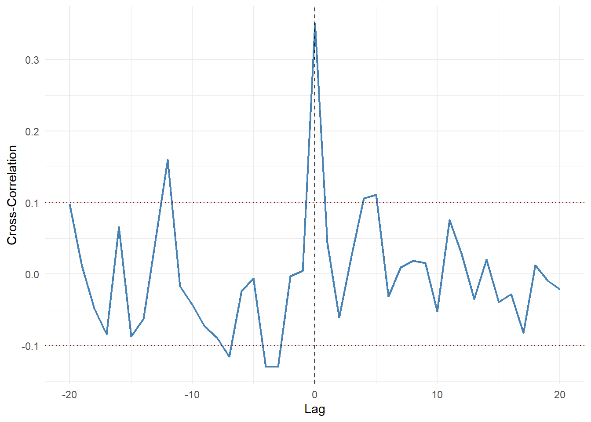
The correlation functions peaks at lag 0, showing a contemporaneous transmission of reinsurance connectedness. The network reacts within the same 5-day trading window as the board market, suggesting that the reinsurance sector is integrated into the global financial system, making the TCI a “Coincident Indicator” rather than a “lagging indicator”, capturing market shocks in real time. However, the highest correlation achieved (\(\rho = 0.350\)) implies that approximately only 12% of the weekly variation in reinsurance market connectedness is explained by equity market volatility. This highlights two different behavior: while the reinsurance market reacts rapidly and almost simultaneously to market movements, the intensity of the reaction remains largely driven by idiosyncratic factors. The remaining variance is likely attributable to liability shocks, internal network rewiring, or lag effects. Thus, while the sector is well connected in terms of information transmission, it remains insulated in terms of magnitude, preventing a one-to-one coupling with the broad market sentiment.
Regarding other major fluctuations in the correlation structure, observed spikes at non-zero lags (like at lag -12 or at lag +5) fall within the bounds of statistical noise and lack significance. The absence of significant lead or lag effects confirm that the VIX cannot be used to predict future movement of TCI.
4.6.2 Structural Break Test
The structural stability of the dynamic analysis was tested performing structural break test on the total connectedness index time series. The tests performed are the Bai-Perron and the ordinary least square cumulative sum (OLS-CUSUM).
4.6.2.1 Bai-Perron
The Bai-Perron algorithm (Bai and Perron (1998)) tests for \(m\) structural breaks in a linear regression model. For our scenario, we tested for regime shifts in the unconditional mean of the connectedness index. For a time series \(y_t\) (TCI), the model with \(m\) breaks (so \(m+1\) regimes) is: \[ y_t = \mu_j + u_t, \quad \text{for } t= T_{j-1}+1, \dots, T_j \] The algorithm identifies the break dates \(T_1, \dots, T_j\) by minimizing the global residual sum of squares (SSR) via dynamic programming (Bai and Perron (2003)): \[ \min_{T_1,\dots, T_m} \sum_{j=1}^{m+1} \sum_{t=T_{j-1}+1}^{T_j} (y_t - \mu_j)^2 \] The algorithm successfully identified 4 optimal breaks, translating to 5 distinct systemic regimes. The dates of the breaks, with their confidence interval at \(95\%\) significance level is reported in Table 4.10.
| Date | Lower bound | Upper bound |
|---|---|---|
| 2018-04-09 | 2018-03-28 | 2018-06-19 |
| 2020-03-02 | 2020-02-21 | 2020-03-09 |
| 2021-06-17 | 2021-06-09 | 2021-06-24 |
| 2023-01-18 | 2022-07-22 | 2023-02-14 |
The first regime coincides with high connectedness period. This coincides with the 2017 HIM hurricanes, but as the previous parts note, the NatCat event happened during a phase that was already in a high connectedness state and moving towards a declining trend, independent on the event, which did not alter significantly the moving of the TCI. The second regime coincides with a stabilization phase (\(\mu = 62.15\)); the third identified regime represents the maximum connectedness average value (\(\mu = 79.50\)), corresponding to the COVID-19 pandemic and the subsequent crisis. The fourth regime maintained medium-level connectedness, with the first part characterized by a significative decline until 2022, where the trend reverted to an increasing phase, leading to an average TCI value of \(\mu = 69.01\). The last regime identified saw a gradual normalization of total connectedness (\(\mu=63.79\)), although the high spike in the last windows might not be fully captured by the Bai-Perron analysis, due to their recent event.
4.6.2.2 OLS-CUSUM
The cumulative sum of ordinary least squares residuals tests the null hypothesis (\(H_0\)) that the mean \(\mu\) is constant over time (Zeileis et al. (2002)). The empirical fluctuation process is defined as: \[ W_n(t) = \frac{1}{\hat{\sigma}\sqrt{n}} \sum_{i=1}^{\lfloor nt \rfloor} \hat{u}_i \quad \text{for } t \in [0,1] \] where \(\hat{u}_i\) are the OLS residuals from the regression on the entire sample, and \(\hat{\sigma}\) is the estimated standard deviation (Brown, Durbin, and Evans (1975)). Under \(H_0\), \(W_n(t)\) converges in distribution to a standard Brownian bridge. Instead, if the mean shifts, the residuals accumulate systemically, causing \(W_n(t)\) to drift and cross the asymptotic confidence boundaries.
The \(p\)-value = \(0.000\) obtained rejects the null hypothesis, meaning that the total connectedness within the reinsurance network is empirically non-stationary. The blue line (CUSUM process) in Figure 4.29 repeatedly and severely breaches the confidence interval (gray area), proving that the mean connectedness of the market fundamentally changes over time, advocating the assessment of reinsurance network through dynamic analysis and not only with the static ones.
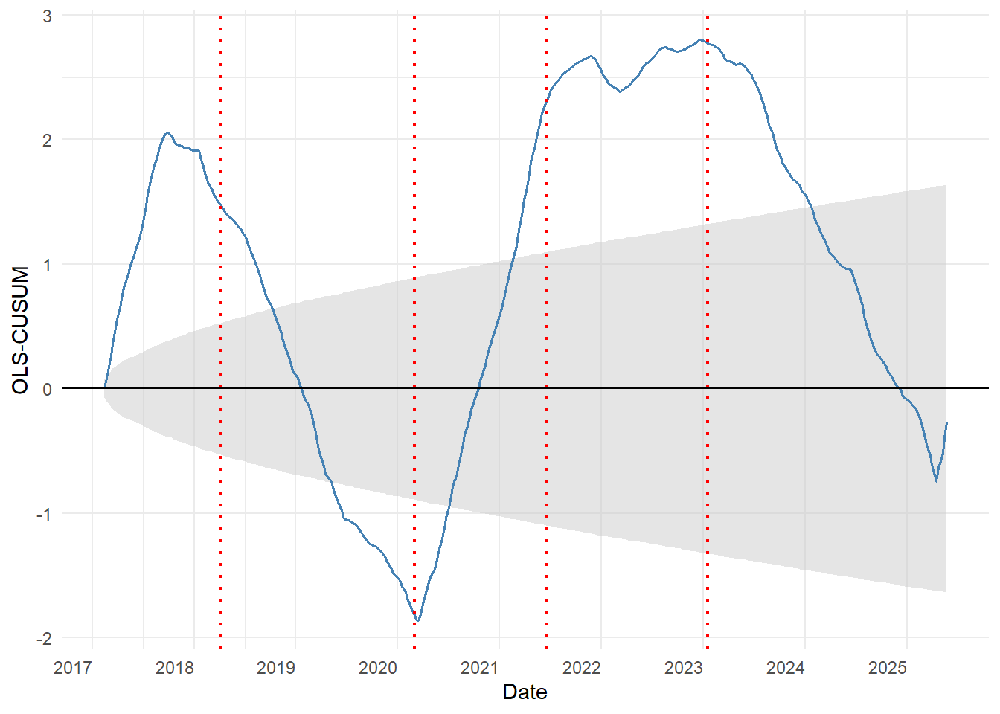
4.7 Conclusion
This chapter extended the static connectedness framework of Chapter 3 to a full dynamic analysis, estimating 349 rolling BVAR windows over the 2015-2025 sample and tracing the evolution of network topology, firm-level roles, and structural stability.
At the system level, the Total Connectedness Index reveals a structurally non-stationary market. The OLS-CUSUM test rejects mean stationarity, and the Bai-Perron algorithm identifies four structural breaks corresponding to five regimes: an initial high-connectivity phase, a stabilization period, the COVID-19 peak, a prolonged elevated phase, and a gradual normalization. The bimodal TCI distribution confirms that the reinsurance system does not revert to a single equilibrium but oscillates between two distinct states. This finding directly qualifies the static results of Chapter 3: a Total Connectedness values of \(74.278\) exceeds the rolling window mean of \(68.2\) by approximately 6 TCI units. Since the static BVAR was computed over the full 1,993 observation sample, this gap reflects the upward pull of the high-connectivity regime on the full sample average.
The topology analysis revealed an asymmetric network that contracts faster than it expands. The 2.2\(\times\) ratio between the APL response coefficients to TCI increases(\(-0.003\)) and decreases (\(-0.007\)) shows that the network’s structural compactness reacts far more sharply when connectedness receds than when it builds: the architecture tightens gradually under accumulating stress but loosens abruptly once that stress passes. The modularity evidence reinforces this: community boundaries erode sharply during high-connectivity periods (\(\rho(\text{Modularity}, \text{TCI}) = -0.78\)), meaning that geographical or functional segmentation provides less containment precisely when it is most needed.
At the firm level, the persistent versus reactive centrality classification uncovers systemic institution not detected through static BVAR. Chubb and Mapfre rank among the top eigenvector hubs across all rolling windows despite their absence from the static centrality ranking, while reactive firms shift between the network core and periphery during stress. The event analysis further shows that the stable core hierarchy of net transmitters is only partially preserved across shocks: COVID-19 and Ukraine conflict showed the highest significant rank correlation (\(\rho=0.47\)), but the HIM hurricanes and the Trump tariffs produce no significant rank correlation with any other event. This shows that firm-level systemic importance within the reinsurance network is not a fixed structural property, but it is rather contingent on the transmission channel. Asset-side shocks synchronize the network amplify the European transmitter hierarchy, while liability-side shocks fragment it along idiosyncratic exposure lines.
The VIX cross-correlation analysis supports this aspect. The TCI behaves as an indicator of broad-market stress, with correlation peaking at lag 0 (\(\rho = 0.35\)), but only \(\approx 12\%\) of weekly TCI variation is explained by equity market sentiment, leaving the bulk attributable to network-internal dynamics and idiosyncratic reinsurance shocks. This seclusion limits the scope for using broad-market instruments as early-warning proxies for reinsurance connectedness.
These findings establish two components of systemic risk that the topological and connectedness analysis alone cannot resolve: the magnitude of the economic damage that a distress firm inflicts on the broader system and whether firms identified as persistent network hubs constitute genuine Systemically Important Financial Institution in the regulatory sense. Chapter 5 addresses both questions by combining tail-risk measures with cross-validation against the centrality and net-strength rankings.